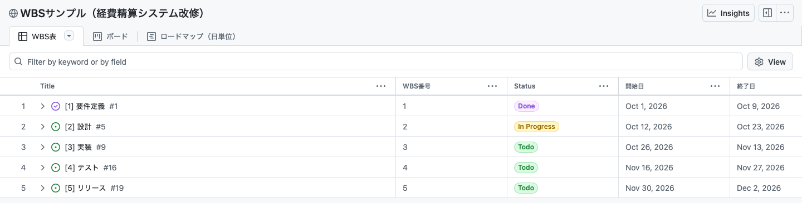
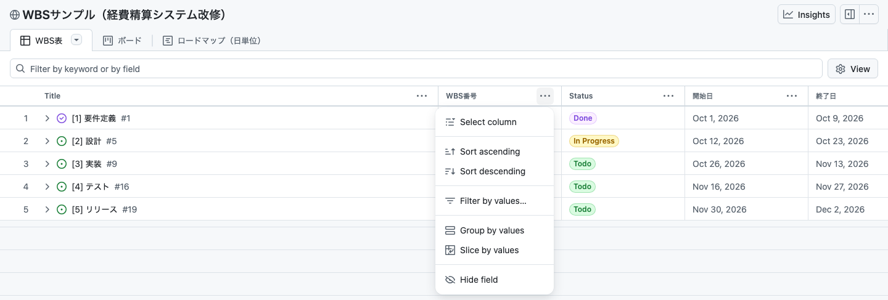
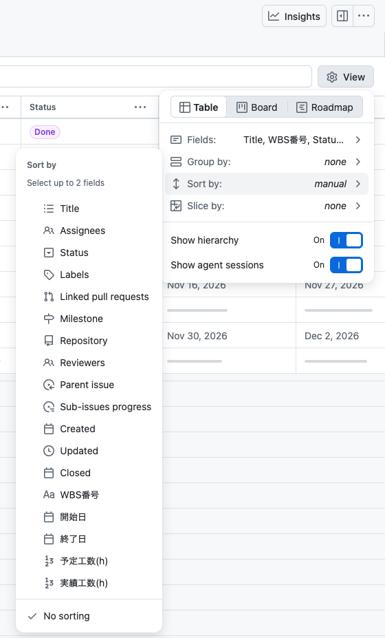
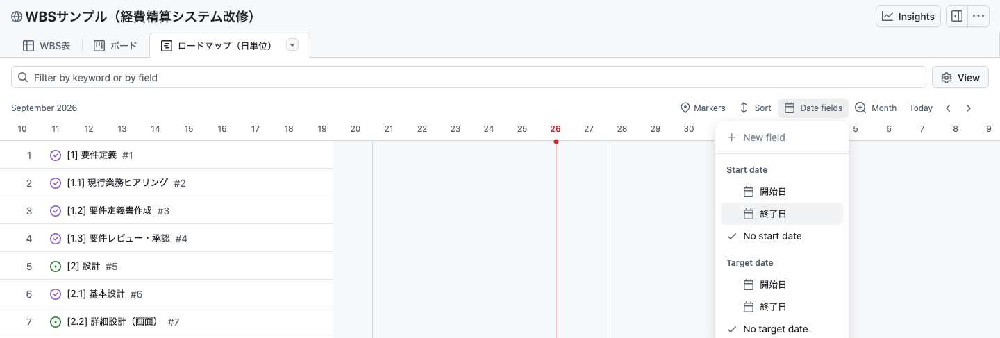
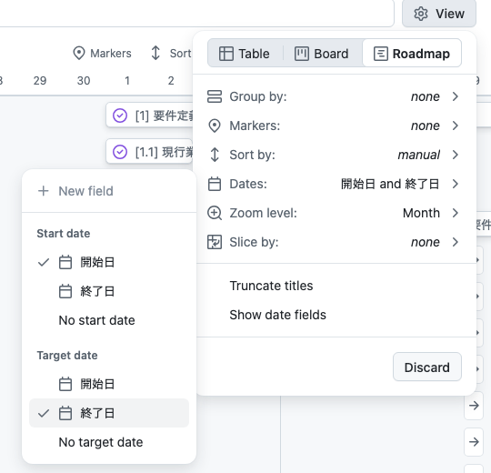
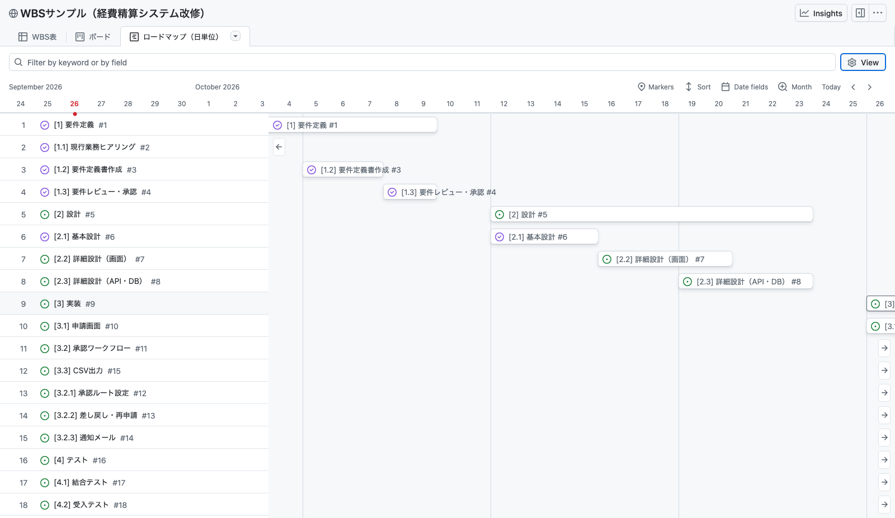
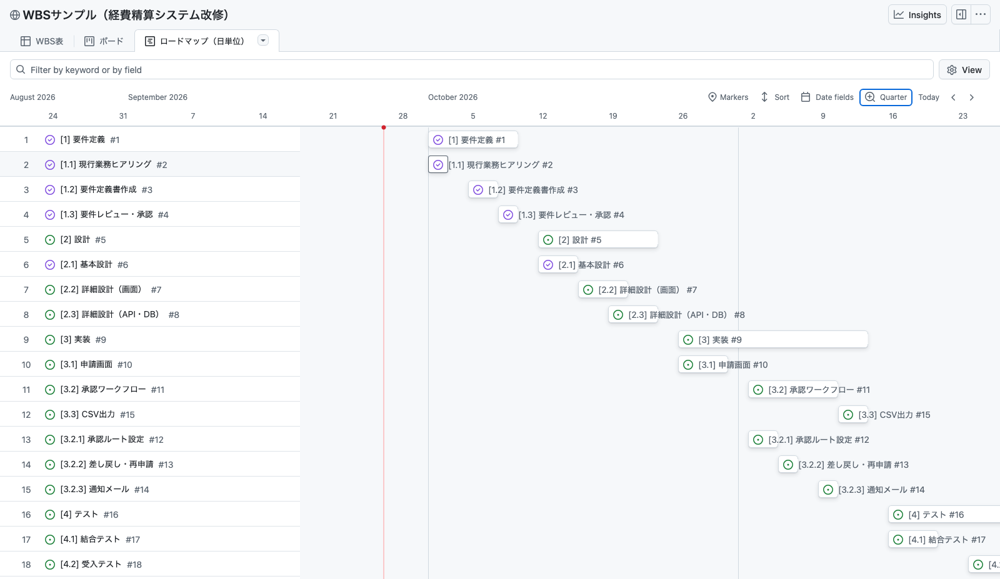
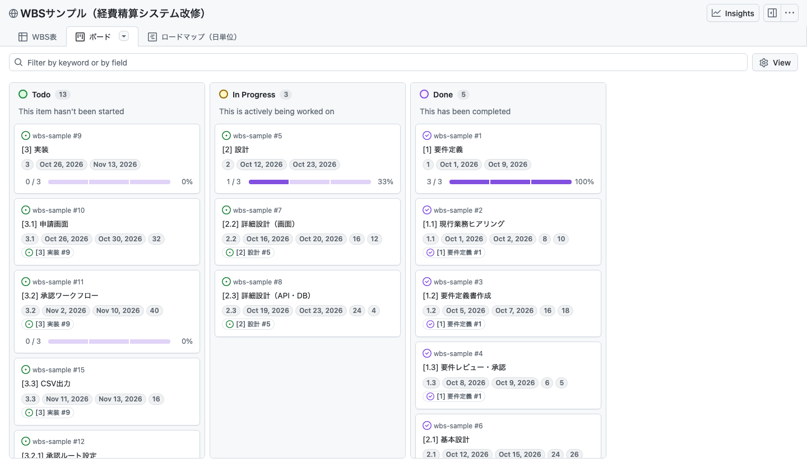
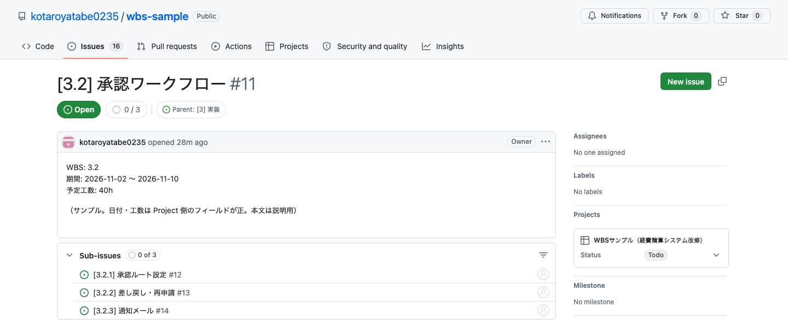
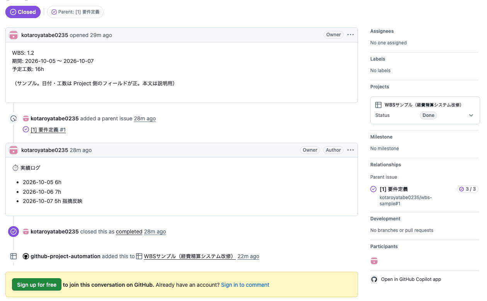

GitHub Projects で WBS を表に並べ、日単位のロードマップで見るまでの画面操作をまとめたガイドです。サンプルは projects/7（非公開、本人のみ閲覧可）にあります。
画面について：キャプチャはログインしていない状態で撮っています。そのため右上に Sign in が見えます。ログインしている本人の画面では、そこがアイコンになります。また設定を変えたとき、メニューに Save ボタンが出ます。
| やりたいこと | GitHub Mobile アプリ | PC のブラウザ |
|---|---|---|
| Project を開いてビューを切り替える | できる | できる |
| Status・日付・工数を書き換える | できる（項目を長押し） | できる |
| Issue にコメント（実績ログ）を書く | できる | できる |
| ロードマップをバーで見る | できない（リスト表示になる） | できる |
| 並べ替え・グループ・日付フィールドの設定 | できない | できる |
アプリは日々の更新に使えます。ロードマップを見たり、ビューを設定したりするのは PC のブラウザで行います。スマホのブラウザでも「PC版サイトを表示」にすれば操作できますが、かなり窮屈です。
上のタブ WBS表 を選びます。最初に見えるのは大項目（フェーズ）の5行です。行頭の › を押すと、その下の作業が開きます。親子関係は Issue の「サブイシュー」から自動で組み立てられます。

列見出し WBS番号 の右にある … を押し、Sort ascending を選びます。同じメニューの Group by values を使うと、その列の値ごとにまとめて表示できます。

右上の View を押すと、表示する列（Fields）、グループ、並べ替え、階層表示のオン・オフを一か所で変えられます。並べ替えは2項目まで指定できます。

タブ ロードマップ（日単位） を開きます。バーに使う日付フィールドをまだ決めていないので、右側は空です。

View → Dates を開き、Start date を 開始日、Target date を 終了日 にします。ツールバーの Date fields からも同じ設定ができます。

ズームが Month なら、1日が1列になります。Today で今日に戻り、‹ › かトラックパッドの横スクロールで前後に動かします。バーの端をドラッグすると、開始日・終了日の値がそのまま書き換わります。

View → Zoom level、またはツールバーの Month を押して Quarter に切り替えると、2か月分が1画面に収まります。ズームは Month・Quarter・Year の3段階で、週や日の単位はありません。

ビューの設定を変えると、View メニューの下に Save と Discard が出ます。Save を押さないと、ページを開き直したときに元へ戻ります。保存した設定は、この Project を見る全員に反映されます。
タブ ボード では、Status ごとに列が分かれます。カードを別の列へドラッグすると Status が変わります。カードには WBS番号・日付・工数と、子の完了数（例：1 / 3）が出ます。

Issue を開くと、本文の下に Sub-issues 欄があります。ここで子の作業を作ったり、既存の Issue を子としてつないだりできます。右側の Projects 欄では、この画面のまま Status を変えられます。

日付と時間をコメントで積み上げる書き方の例です。履歴が残る代わりに、合計はスクリプトなどで集計する必要があります。累計だけでよければ、Project の 実績工数(h) に数字を上書きするほうが手軽です。

子の日付を動かしても、親の開始日・終了日はそのままです。自動で集計されるのは子の完了数だけです。
「3.10」が「3.2」より前に来ます。10件を超える階層は「3.02」のようにゼロ埋めします。
並べ替えや日付フィールドを変えたら Save を押します。押さないと開き直したときに戻ります。
矢印でつなぐ依存線、土日・祝日の考慮、ベースラインはありません。遅れたら後ろの作業を手で動かします。